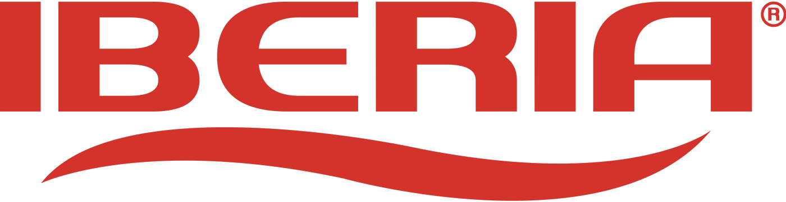

Programa de Adopción de IA · Fase 1 · Entender
Propuesta de agenda para la semana del 18 de agosto: nueve entrevistas de levantamiento en la planta de Cagua y la primera formación en IA para el equipo directivo.
Dos jornadas dentro de la semana del 18 de agosto. Iberia elige el día de cada una entre las tres opciones disponibles.
| Jornada | Dónde | Duración |
|---|---|---|
| Entrevistas de levantamiento Nueve entrevistas |
Planta de Cagua | Jornada completa |
| Formación 1 · Nivel directivo | Caracas | Tres horas |
Cada jornada ocupa un día distinto. Proponemos esta semana para mantener el ritmo de arranque del programa; si a Iberia le conviene otra, lo ajustamos.
Nueve entrevistas en un solo día, en dos pistas simultáneas conducidas por Gabriel Montiel y Ruth Velázquez. Cada entrevista dura cincuenta minutos.
| Hora | Pista A Gabriel Montiel | Pista B Ruth Velázquez |
|---|---|---|
| 06:00 – 07:30 | Traslado Caracas → Cagua | |
| 07:30 – 08:00 | Encuadre con los líderes del proyecto | |
| 08:00 – 08:50 | Gerente de Planta | Jefe de Almacén de Materia Prima |
| 09:00 – 09:50 | Jefe de Producción | Jefe de Mantenimiento |
| 09:50 – 10:10 | Pausa | |
| 10:10 – 11:00 | Gerente de Compras | Jefe de Laboratorio |
| 11:10 – 12:00 | Jefe de Diseño y Desarrollo | Gerente de Calidad |
| 12:00 – 13:00 | Almuerzo | |
| 13:00 – 13:50 | Gerente de Distribución | — |
| 14:00 – 14:45 | Cierre con los líderes del proyecto | |
| 15:00 | Regreso a Caracas | |
| Cargo | Área | Entrevista con |
|---|---|---|
| Gerente de Planta | Operaciones | Gabriel Montiel |
| Jefe de Producción | Operaciones · Planta | Gabriel Montiel |
| Gerente de Compras | Finanzas | Gabriel Montiel |
| Jefe de Diseño y Desarrollo | Calidad y Logística | Gabriel Montiel |
| Gerente de Distribución | Calidad y Logística | Gabriel Montiel |
| Jefe de Almacén de Materia Prima | Operaciones · Planta | Ruth Velázquez |
| Jefe de Mantenimiento | Operaciones | Ruth Velázquez |
| Jefe de Laboratorio | Calidad y Logística | Ruth Velázquez |
| Gerente de Calidad | Calidad y Logística | Ruth Velázquez |
Primera de las tres formaciones del programa. Sesión de tres horas en Caracas, práctica y sobre información propia de Iberia.
| Persona | Cargo |
|---|---|
| Alberto García-Ramos | Director Gerente General |
| Antonio Sorrentino | Director de Comercialización |
| Flaviano Tucci | Director de Operaciones y de Calidad y Logística |
| Dora Luciche | Directora de Finanzas |
| Gustavo Carballo | Director de Capital Humano |
| Martha Fuentes | Gerente de Tecnología de la Información · líder del proyecto |
| Luis Daniel Agostini | Gerente de Desarrollo Comercial · líder del proyecto |
Las licencias todavía no están contratadas. Son necesarias para que la sesión sea práctica, por lo que conviene resolverlas antes de fijar la fecha definitiva.
| Concepto | Detalle |
|---|---|
| Qué se contrata | Licencias corporativas de Claude (Anthropic) para uso organizacional de Iberia. |
| Cuántas | Siete para esta primera cohorte. Escalan a unas veinte al incorporar las gerencias. |
| Costo | USD 25 por usuario al mes. Siete licencias: USD 175 mensuales. |
| A nombre de | Industrias Iberia, directamente. Boosty no intermedia el costo. |
| Forma de pago | Tarjeta Visa o Mastercard internacional. No es viable la transferencia internacional. |
| Gestión | Boosty acompaña la contratación y la configuración. Iberia queda como titular de la cuenta. |
| Plazo sugerido | Tarjeta disponible el viernes 14 de agosto, para dejar las cuentas creadas y probadas antes de la sesión. |
Recomendamos destinar una tarjeta específica del programa. Sobre ella irán también, más adelante, la infraestructura en la nube y el consumo de la API de IA, lo que facilita llevar el control separado del costo del proyecto.
Las dos formaciones restantes del programa. Quedan por definir en fecha y modalidad.
| Formación | A quién |
|---|---|
| 2 · Gerencias | Las trece gerencias restantes: Ventas, Ventas Olympia, Entrenamiento en Ventas, Distribuidores, Cuentas Clave, Recursos Humanos, Planta, Mantenimiento, Distribución, Calidad, Compras, Contabilidad y Tesorería. |
| 3 · Líderes | Las jefaturas y coordinaciones de todas las direcciones. |
Dos definiciones necesarias:
| Acción | Responsable | Fecha |
|---|---|---|
| Elegir el día de la jornada de entrevistas y el de la formación | Martha Fuentes y Luis Daniel Agostini | Viernes 14 de agosto |
| Confirmar los nueve participantes de las entrevistas | Martha Fuentes y Luis Daniel Agostini | Viernes 14 de agosto |
| Disponer la tarjeta para las licencias corporativas | Dora Luciche | Viernes 14 de agosto |
| Confirmar sala y horario de la formación | Martha Fuentes y Luis Daniel Agostini | Viernes 14 de agosto |
| Contratación y configuración de las licencias | Boosty, con Iberia como titular | Lunes 17 de agosto |
| Traslado Caracas → Cagua del equipo consultor | Martha Fuentes y Luis Daniel Agostini | Día de las entrevistas |